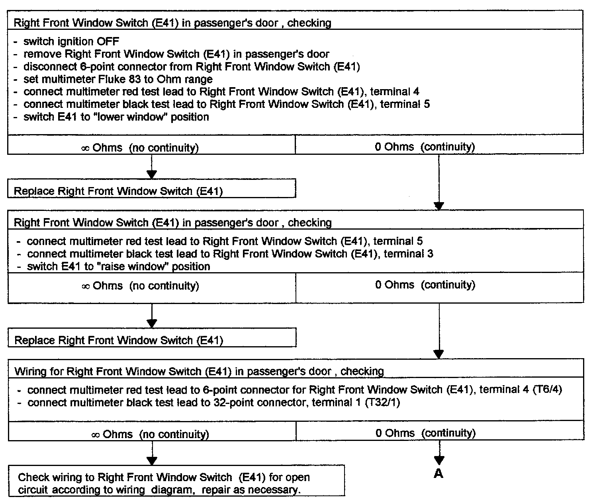
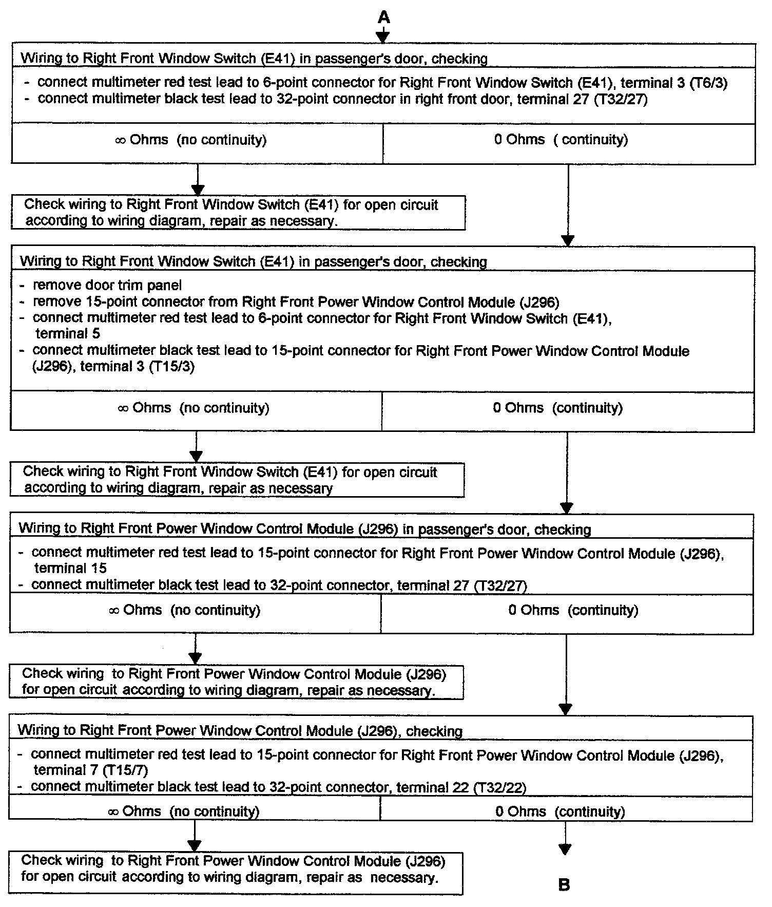
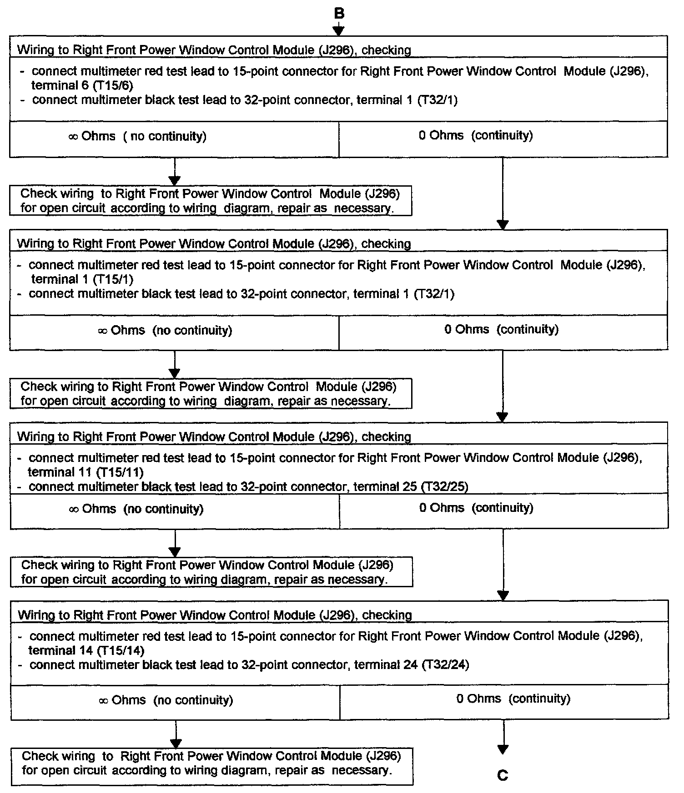
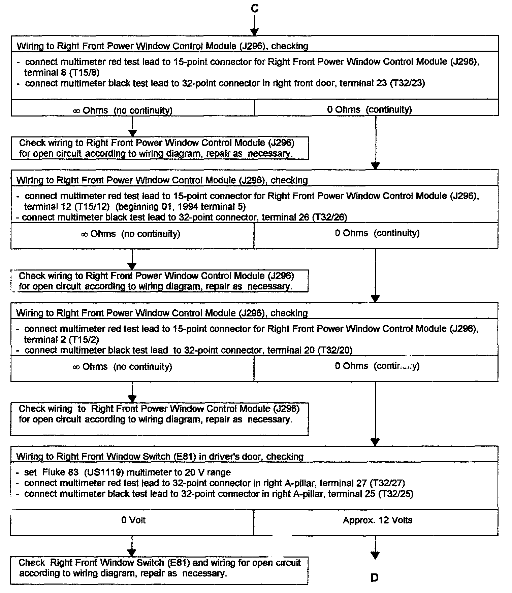
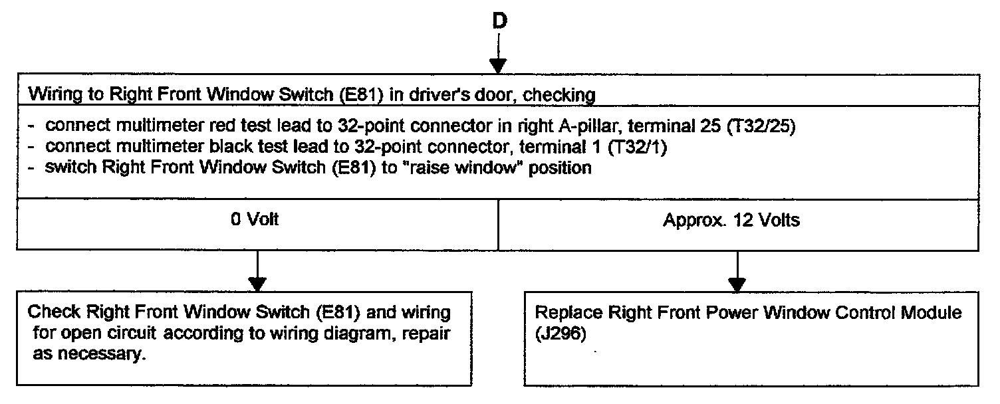

Power Window, Right Front, Checking
Tools required:
- Digital multimeter Fluke 83 (US 1119)
CAUTION: DO NOT damage, enlarge or bend connector terminals or cavities by forcing probes into them when performing electrical checks. Use Connector Test Kit VW 1594 to make the necessary electrical connections.
- Connector Test Kit VW 1594
- Applicable wiring diagram





Test conditions:
- Battery voltage OK
- Circuit breaker S 43 OK
- Fuse S 14 (10A) on fuse/relay panel OK
- Power window mechanically OK
- All other power windows OK
- Troubleshooting "POWER WINDOWS, LEFT AND RIGHT FRONT, CHECKING" for passengers door completed, but problem was not connected.
NOTE:
- Use Connector Test kit VW 1594 to make all necessary electrical connections.
- For terminal designation of 32-point connector in A-pillar left or right, Connector Locations